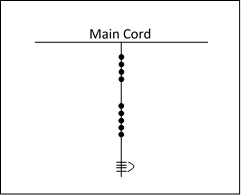
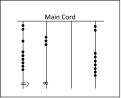

The Incan civilization is widely known for its vast empire until its conquest and for its ancient citadel, Machu Picchu, resting in the Andes mountains. Less often heard about them is their knowledge and understanding of mathematics and their use of the Peruvian quipu, a counting system using cords and knots.
What is a Quipu?
The quipu consists of a collection of knots and cords used to permanently store and communicate information. These knots and cords are specifically arranged so that their meaning can be interpreted. A quipu is made of a main cord, which has other cords attached perpendicular to it. The cords directly attached to the main cord are referred to as H cords. If there are cords attached to the H cords, they are referred to as B cords. Knots are typically found on the H and B cords, not the main cord. Quipus sometimes contain totalizer cords, which summarize the information of the cord group on a single cord.
The cords can carry different values based on the type of knots displayed and their position on the cords. Quipus use three different types of knots. Single knots are used to denote values in the tens, hundreds, thousands, and ten-thousands. They are located on the upper parts of the H cords. Figure-eight knots are used to represent the integer “one”. Long knots have anywhere between two to nine turns, which are used to represent the integers two through nine. Figure-eight knots and long knots were placed at the bottom of the cords. Single knots were placed above these in groups of common place value. For example, a figure-eight knot followed by a group of three single knots followed by a group of two more single knots would represent the value 231. Like us, the Incans used a decimal (base-ten) system.
Examples with Quipus:
Let’s represent long knots by vertical bars tied by a bracket (e.g. “four” would be represented by ). We will represent single knots by • and figure-eight knots by ∞.
What number would be represented by this cord?
Try to figure out what numbers would be represented by each of these cords:
Literary Quipus:
The 1996 discovery of a manuscript titled “Historia et Rudimenta Linguae Piruanorum” in Italy contained information that explained how quipus were used as a means of expressing spoken language. “Ideograms” or symbols from well-known Incan art were used to represent both phonograms (sounds) and logograms (words). This was done by weaving a symbol into the cord followed by a number. The number represents which syllable of the word represented by the symbol to consider. In this way, one could either represent the word of the symbol, or represent distinct syllables form the word represented by the symbol. Additionally, the manuscript goes on to ascribe distinct numerical values to the widely used symbols. This means that both phonograms and logograms could be completely represented on quipus by two distinct numbers. The validity of this usage of quipus is currently up for debate.
Here is a picture to show you an example:
Relevance of Quipus in Incan Society:
Actual quipus were ornate and of many colors. Because of the complexity if the quipus, designated members of Incan society were selected to be the Quipucamayoc or “keeper of the quipus”. Their role was to construct and interpret the meaning behind the quipus. Quipus held a high societal and sacred importance to the Incans. They were used for record-keeping and recording history; they possibly even served as a functional replacement to a traditional writing system for the Incans. It is also thought that they served a role in the Incans postal system (which covered over 14,000 miles!). The quipus may have served a purpose in astronomy and magic in Incan culture, giving them a sacred position in Incan society.
Quipus are a pure example of math’s prevalence in society. They are a practical working logical-numerical system that served multiple purposes for the Incan people. Since we are so accustomed to our written system for dealing with numbers, it is fascinating to see a creative and effective way to compute and record numbers as well as more abstract ideas.
The Incan quipus are still shrouded in mystery. Perhaps there is more to be learned of the indigenous civilization whose mysteries lie within the knots and cords. Only time will reveal to us the secrets of the quipus and the Incan people.
Credits:
Learn more:
Discover. | Learn. | Grow.
 🇺🇸 Copyright © 2021 Athanasios Grivakis
🇺🇸 Copyright © 2021 Athanasios Grivakis